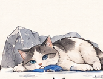
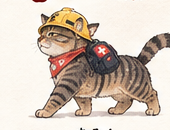

名前を持つ人格が、猫に入る
人の心の仕組みがわかった時代。名前を持つ人格が、少しの間だけ猫の中に入れるようになった。 町はそれを「ぼうさいネコ」と呼ぶ。
タキザワは、東の猫に入る人格。シラヤマは、西の猫に入るはずの人格。 けれど、まだ入る体が見つかっていない。眠っている、と町の人は言う。
少し先の平泉。人の心の仕組みがわかり、名前を持つ人格が
90秒だけ、猫の中に入れるようになった。
タイヤの裏、看板の足元、草の下。人が見ない高さに立つ「赤いしるし」を、
猫の目と鼻と足で記録する。
猫は覚えない。記録だけが、町に残る。
昼の平泉は人のもの。住所があり、名前があり、消火栓は番地で呼ばれる。
けれど赤いものは、人が見ない高さに立っている。だから町は、猫に頼むことにした。
人の心の仕組みがわかった時代。名前を持つ人格が、少しの間だけ猫の中に入れるようになった。 町はそれを「ぼうさいネコ」と呼ぶ。
タキザワは、東の猫に入る人格。シラヤマは、西の猫に入るはずの人格。 けれど、まだ入る体が見つかっていない。眠っている、と町の人は言う。
夜、町はねこの時間になる。消火栓は赤いしるしになり、呼び方は方角と、距離と、においだけ。 あなたはタキザワを選び、東の猫の中に入る。
壁にぶつかる。タイヤの裏に赤が見える。縄張りの端には、知らないにおいがする。 赤いしるしを見つけるたび、記録に一つ、点が入る。
赤いしるし。きろくに、ひとつ。ねこの時間が終わると、タキザワは猫から出る。出る直前、猫から借りた三つのもので今日を残す。 目（何を見て、何をまだ見ていないか）、鼻（まだ見ていない赤のうち、一番近い方角）、 足（この体で、どれだけ速く回れたか）。
朝になると、人の町が戻る。昨日と同じ町。何も変わっていない。 ただ、記録には昨日見た赤い点が残っていて、鼻はまだ見ていない方角を指したまま。
猫は見たものを残すだけ。それがどこにあったか、覚えるのは人の仕事。タキザワとシラヤマは猫の名前ではなく、猫に入る人格の名前。ボタンで表情が変わります。

みつけた赤は みんなのあんしんに つながるニャ
東の猫に入る人格。中尊寺通りのあたりを縄張りにする体を、すでに持っている。 赤いしるしを見つけるのが早く、見つけた数をそのまま「あんしん」に数える。

そなえれば きっと まもれるニャ
西の猫に入るはずの人格。まだ入る体が見つかっておらず、眠っている。 町のだれかが西の野良猫を見つけて教えてくれたとき、目を覚まし、西の記録が白いままあなたを待つ。
記録を持つ。言葉のかわりに、方角・距離・秒数で残す。前回のことを覚えている。体はない。
目、鼻、足を持つ。縄張りを知っている。けれど地図も記憶も持たない。
舞台は岩手県・平泉の実際の地図。スマホのブラウザで、インストールなしで遊べます。
地図の東と西に、2つの人格。体を持っている人格だけに入れる。眠っている人格は、まだ選べない。
猫の目線で町を歩き、走る。赤いしるし（消火栓）に近づいて「てんけん」すると、記録に点が入る。
90秒で人格は猫から出る。出る直前、猫から借りた「目・鼻・足」の3つの感覚で今日を残す。
猫は眠り、なにも覚えていない。記録は町の側に残る。もういちど入るか、べつの人格へ。
同じ町でも、見回り方で記録の一行が変わります。数字を競うのではなく、記録が埋まり、鼻の向きが変わり、足が速くなる。
この縄張りで、何を見て、何をまだ見ていないか。見つけた割合で一行が変わる。
ひがしの なわばりの 記録は、まだ しろい。
ひがしの なわばりで、まだ しらない 赤が 3つ。
記録の はんぶんより むこうが、見えた。まだ 1つ。
ひがしの なわばりの 記録は、できた。
まだ見ていないしるしのうち、一番近いものの方角と距離。次に入るときの手がかりになる。
いちばん近い「まだ」は、みなみ 10m。
においは、にしの なわばりから。まだ、だれの 記録にも ない。
べつの なわばりの 記録も、まだ しろい。
この体でどれだけ速く回れたか。前に入ったときと比べる。体の使い方を覚えるのは、あなたの手。
この からだに、はじめて はいった。さいごの しるしまで 41秒。
からだが、みちを おぼえた。まえより はやい。33秒。
この からだの、いちばん はやい 足。29秒。
きょうは、まわりみちを した。48秒。
人格は町にいくらでも作れる。足りないのは体。
西の猫を起こすのは、プレイヤーではありません。現実の町のどこかで、だれかが野良猫を見つけて、教えてくれたときです。
ゲームと現実の町が、ここでつながります。
記録の画面は、埋まり具合で夜から朝へ色が変わります。スワイプで一周の流れを追えます。
ねこの時間は、まだ始まっていません。
公開されたら、このページのボタンから、そのまま遊べます。
